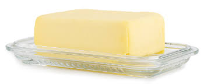
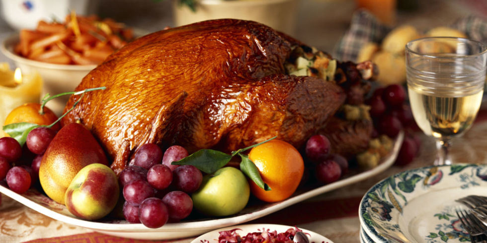

Data about what you eat and what's in what you eat
Upon researching the JSON file on food their seem to be several numbers and statistics being calculated and inputted every day. The data is organized by the United States Department of Agriculture and is meant to serve as a database that holds facts about the composition of foods and the percentages of vitamins, minerals and other important nutritional data. It is organized alphabetically by the category of food in this case it starts with "butter". The data for each food is stored in a "data" dictionary which holds "Major minerals", "Vitamins", "Fats", and other components of that sort while also having data like "household weight", a description or a "Data Bank Number". Their are mathematical errors that can of course plague the data set due to human error such as what was the widely thought fact that spinach has an extremely large amount of iron and should be eaten if necessary, but in truth their was human error involved and the misplacement of a zero caused us to think the iron in spinach was tenfold what it truly is. The database is meant to be traveled through by searching for something by name, number, or contents and can be organized as such with relative ease.
 Example of Data:
"Category": "BUTTER",
"Data": {
"Niacin": 0.042,
"Major Minerals": {
"Copper": 0.0,
"Iron": 0.02,
"Sodium": 576,
"Potassium": 24,
"Calcium": 24,
"Magnesium": 2,
"Zinc": 0.09,
"Phosphorus": 24
},